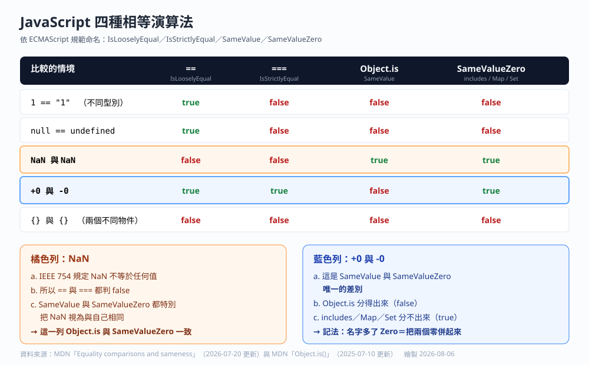
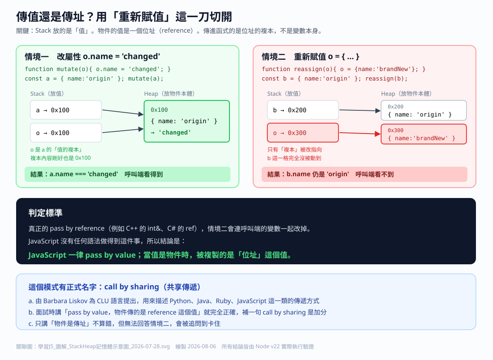
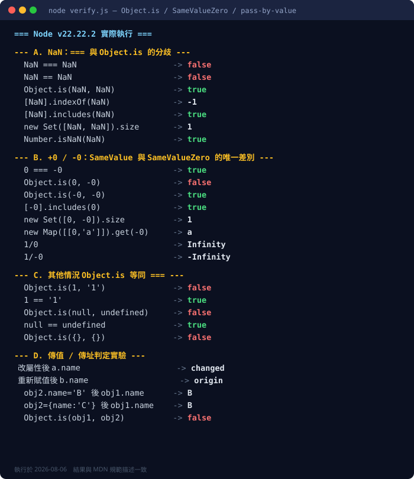

Object.is ／ SameValue ／ SameValueZero ／ NaN ／ pass by value ／ call by sharing
這三張圖是本篇的視覺錨點。之後回頭複習時，先看圖再看題，答不出來就回到圖上找對應的那一格。



ECMAScript 規範定義了四種相等演算法：IsLooselyEqual（==）、IsStrictlyEqual（===）、SameValue（Object.is）、SameValueZero（includes、Map、Set）。
| 情境 | == | === | Object.is | SameValueZero |
|---|---|---|---|---|
1 與 "1" | true | false | false | false |
null 與 undefined | true | false | false | false |
| NaN 與 NaN | false | false | true | true |
| +0 與 -0 | true | true | false | true |
{} 與 {} | false | false | false | false |
== → === → SameValueZero → SameValue。名字裡多出來的 Zero，就是在說「把 +0 與 -0 併成同一個」。a. NaN 代表「一個無法表示的運算結果」，例如 0/0、Math.sqrt(-1)、parseInt('abc')。
b. IEEE 754 浮點數標準規定 NaN 與任何值比較都不相等，包含跟自己比。
c. 用意是「兩個都算失敗，不代表是同一種失敗」。
d. == 與 === 忠實遵守 IEEE 754，所以判 false。
e. SameValue 與 SameValueZero 是 ECMAScript 自己定的「同一性」，不是數學相等，所以刻意讓 NaN 等於自己，否則 Set 裡會塞進無限多個 NaN。
JavaScript 一律 pass by value。物件的「值」就是那個指向 Heap 的位址。判定標準只有一條：在函式內對參數重新賦值，呼叫端會不會跟著換。
// 如果 JS 是 pass by reference，b 應該變成 brandNew function reassign(o) { o = { name: 'brandNew' }; } const b = { name: 'origin' }; reassign(b); console.log(b.name); // 'origin' ← 完全沒被換掉
直接輸入執行結果。布林值請輸入 true 或 false，數字直接輸入。大小寫與前後空白會自動忽略。
這一區專門收集「聽起來很對但其實有陷阱」的說法，包含你原本問題裡出現過的句子。
先自己打一遍再看參考答案。打字的過程本身就是在練口說結構。
每項約 25 到 40 分鐘。勾不下去就代表那一格還沒真的懂，回第 1 節重讀。
JS-相等性與傳值傳址.md 勾那份 Markdown 的 checkbox。